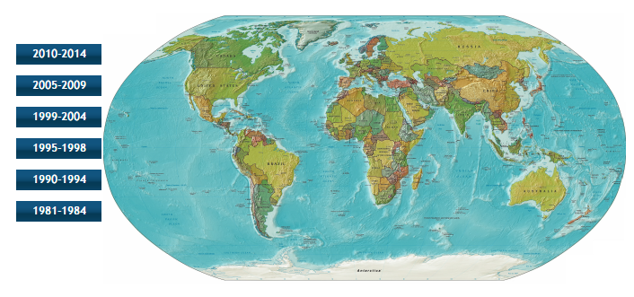
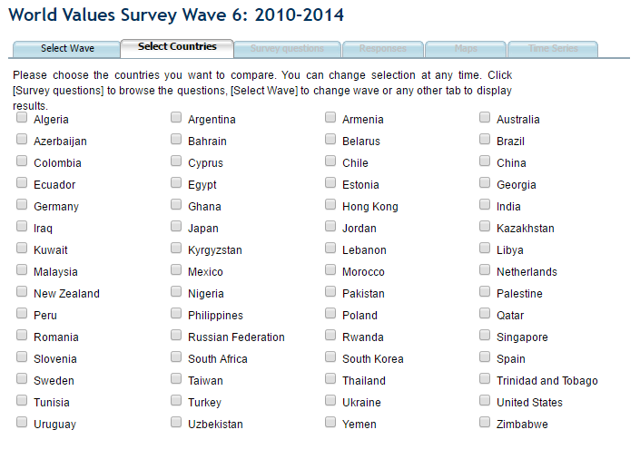
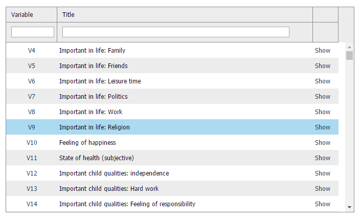
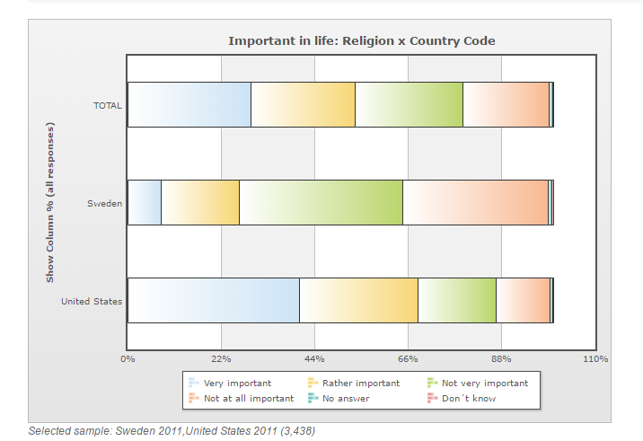
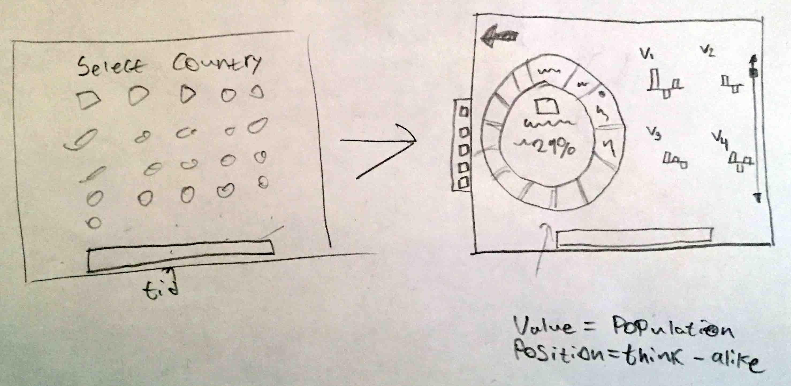

ValuEye
A visualization made by Hannes Vestberg in 2017 - Information Visualization, KTH
Select the Origin Country to view the world from
{{ country.name }}
Viewing the rest of the world as {{ originCountry.name }}
{{ selectedCountry.name }}
{{ selectedCountryPopulation | textOrNumber }}
{{ selectedCountry.continent }}
Our values differ by:
{{ selectCountryValueDifference }}
Process
Analytic Trail 1
World Value Survey Online Analysis Tool
The Online Analysis tool provided by WVS seemed very complicated at first when the user was presented the initial options. To be able to view the data, the user had to first specify the time interval, then choose the countries and finally the variable or value to visualize.
Many Steps
All those steps are required, and great if the user knows what to look for. But if they did not know all these parameters and wanted to have a quick overview of the overall values of the world, they would have a very hard time finding this data.
 No Context
As the data from WVS are values and opinions, you also have a stronger need to contextualize these with the opinions of other countries. Using the WVS Online Analysis tool, this data was only presented to the user if they added more countries to the visualization. I wanted to improve this.
Research Question
I decided to analyse this area as my research question, with the wording:
“How can you visualize the overall values and value differences in the world, as seen by a selected country, with focus on the individual variables while still containing a geographical context?”.
Analytic Trail 2
Design
I started out experimenting with the flow and design of the visualization and decided to challenge myself with a circle diagram, as opposed to a geographical map of the world that seemed like a natural choice. I wanted the circle diagram to display the overall value differences of the world, and present the more detailed data in a separate view as bars.
Results
The result of answering my research question is “ValuEye”, visualizing data for 98 countries, 22 parameters, in an interval of 33 years.
Circle Diagram
In the circle diagram, each slice represents a country. The size of the slice correlates to country population and the color represents the world continents. The origin country is always at the top, and the further down you go, the more will the values differ from the origin country.
Bar Plot
Though the bar plot you get detailed information about the info and values of the selected country. By clicking, you toggle viewing mode from A-B comparison to difference plot.
Group Filtering
You can filter a group by clicking and dragging over several countries, or by searching for a country, a whole continent or “all” to select all countries. The bar plot will calculate the mean values for the selected group.
Learning
When I started working on this visualization I had only about two weeks of experience in web programming, so I saw this project as a perfect opportunity to improve my skills. I have greatly developed my programming knowledge in html, CSS, jQuery, javaScript, D3 and working with frameworks such as Bootstrap and AngularJS. It was an enjoyable challenge to visualize the world as a circular diagram, and still displaying important geographical information. Also how to combine the overview visualization and the detailed information about the different parameters. I will certainly look back at this project as a great learning experience.